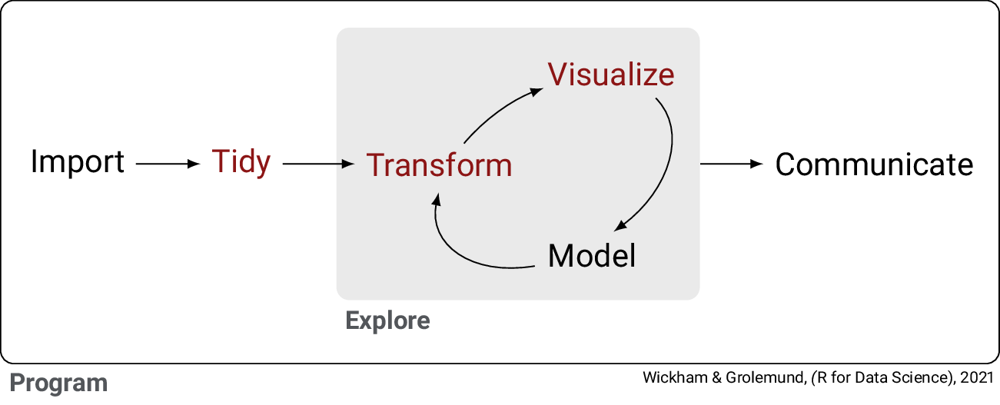
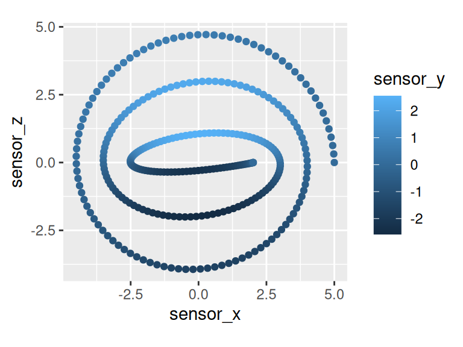

The R package dddr (pronounced three-dee-arr) is designed for people working with person-scale, spatial data.
spatial: in contrast to most data, which is a single value (e.g., arousal, blinks per second, GDP), spatial data has multiple, tightly-linked values.
person-scale: in contrast to packages like sf or rspatial that focus on geographic data (latitude, longitude, altitude), person-scale data uses Euclidean 3D space.
The roots of this library are in behavioral tracing (Yaremych & Persky, 2019), the analysis of behavior recorded finely in both time and space. The primary example is using virtual and augmented reality to collect data on hand motion or head direction.
Why do we want to do this? In short, this package helps you tidy, visualize, and transform your 3D data more effectively:
tidy 3D data into individual, meaningful columns
visualize 3D data according to natural spatial semantics
transform 3D data using common operations, including many from linear algebra
These names refer to Hadley Wickham’s model of data science, which is a very good overview of the data science process.

1.1 Tidy
Here’s a common example of 3D data in a table of some sort:
While there’s seven lines of code, there are only two operations, conceptually. This code takes the difference between separate positions to compute a velocity vector, and then computes the magnitude (size) of this velocity vector.
More importantly, this code is also buggy! Do you notice the line sensor_z - lag(sensor_x)? This doesn’t compute what we want. This error could be a simple copy-and-paste problem that would wouldn’t necessarily notice until you’re deep into writing other parts of your analysis. The more code you write, the more bugs you will have. Therefore, write less code and write less bugs.
1.1.1 What is tidy data?
If the data were tidy, these steps would be less tedious.
Why ensure that your data is tidy? There are two main advantages:
There’s a general advantage to picking one consistent way of storing data. If you have a consistent data structure, it’s easier to learn the tools that work with it because they have an underlying uniformity.
There’s a specific advantage to placing variables in columns because it allows R’s vectorized nature to shine. As you learned in Section 4.3.1 and Section 4.5.2, most built-in R functions work with vectors of values. That makes transforming tidy data feel particularly natural.
We think of position (or velocity) not as three variables, but as one variable represented by a triple of three numbers. Therefore, with tidy data, it should be only one column. This explains why working with XYZ data separately can be so tedious. This can be done with the vector3 function.
tidy_vectors <- messy_vectors %>%mutate(sensor =vector3(x = sensor_x, y = sensor_y, z = sensor_z) #<< ) %>%select(sensor, time, temperature)tidy_vectors
Let’s calculate speed again, and see what the code looks like.
tidy_vectors %>%mutate(delta_t = time -lag(time),sensor_velocity = (sensor -lag(sensor)) / delta_t,sensor_speed =magnitude(sensor_velocity) ) %>%select(sensor, time, temperature, sensor_speed)
Look! Now we have two lines of code to represent our two conceptual operations. One creates the velocity vector, and the other calculates the speed vector. This is much closer to how we should be thinking of this kind of data.
1.1.2 How do you tidy data with dddr?
dddr revolves around two kinds of data: vector3 and quat.
1.1.2.1vector3
These represent 3D vectors, which can be position, velocity, acceleration, translation, direction, and other types of data.
Note
The name vector3 highlights the fact there are two kinds of vectors being discussed here: 3-vectors, a geometric object with magnitude and direction, and R vectors, that represent ordered collections of one kind of data. This makes vector3 an R vector of 3-vectors.
1.1.2.2quat
Short for quaternion, quats represent orientations, angular velocities, and rigid rotations. While somewhat mathematically complex, dddr is written to minimize how much you actually work with, somewhat inspired by the Unity game engine. If you do want a mathematical grounding for what quaternions are, watch a series of videos (1, 2) and interactive explainers (3) by Grant Sanderson and Ben Eater.
1.2 Visualize
Data visualization is part of any data scientist’s toolbelt. Visualization is important for: - checking and cleaning data - understanding rich aspects of data - generating insights from data - reporting findings about data
One feature of spatial data is that it has a lot of human language associated with it. We can ask about the top view of a scene, and it has a meaning - and if we tell the computer how to translate from XYZ to “top view”, it can perform the translation for us.
ViewCube, Khan et al. (2008)
1.2.1 Messy data means a messy visualization
Let’s plot this data from a top view. If y is the vertical dimension, then let’s use x and z to plot.
messy_vectors %>%ggplot(aes(x = sensor_x, y = sensor_z, color = sensor_y)) +geom_point() +coord_equal()

Some of the things this visualization can tell you are that:
it spirals inward as you go counterclockwise (looking from the top view)
the back side (high Z) is higher (high Y)
Nothing seems wrong yet, right?
1.2.2 Tidy data means a tidy visualization
Again, let’s plot this data from a top view, but this time, let’s do so with dddr.
Wait, that’s not counterclockwise as you go in… That’s clockwise.
In the messy data plot, we accidentally chose the wrong axes - by choosing x for x and y for z, it meant that we had transformed the data like in a mirror, changing the handedness of the coordinate system.
Following a semantic interpretation through all the spatial conventions can be tricky. This is a theme we’ll explore in a bit.
1.2.3ggplot2 extensions
As visible in the code above, dddr plugs directly into ggplot. Some of the handy pieces are:
geoms (geometric objects):
geom_point3, geom_path3
geom_spoke (direction)
coords (coordinate systems) are specified with coord_(frame)_(direction)
coord_look_at_top: Create the view as if you’re looking at the top of the object.
Additional theme parameters for the axis rose under dddr.rose.*
1.2.4 Semantics
If you have worked with 3D data before, think of the coordinate system you know well.
What direction is up?
What direction is forward?
What direction is right?
Is the coordinate system left-handed or right-handed?
Which axis does “roll” go around?
Does a negative roll make the y-axis move towards the old x-axis, or vice versa?
If you have three rotations (roll, pitch, yaw) in what order are they applied?
If a pitch comes after a roll, does the pitch go around the old axis, or the new axis?
How many of the questions did you answer confidently and correctly?
There are 48 potential axis semantics, and 144 potential angle semantics. Some are simple reflections of each other; some are simple rotations; most are neither. This provides a significant challenge when working with “just” XYZ data.
Vectors in 3D space need to have some axis semantics. What meanings - up, down, forward, backward, right, left - are assigned to the positive and negative X-, Y-, and Z-axis? There are 48 different possible conventions, but only a handful are in common use.
Once the axis semantics are defined, rotations defined by rotation matrices or quaternions are also defined. However, rotations and orientations are often specified using Euler angles or Tait-Bryan angles such as yaw, pitch, and roll. To interpret these consistently, dddr uses angle semantics, specifying what yaw, pitch, and roll mean. What axis is each rotation performed around? What order do these rotations go in? Are the rotations applied to the axes of future rotations? Given three angles, there are 144 possible rotations that could be referred to.
dddr provides some handy defaults in commonly used coordinate systems, such as this code for Unity’s coordinate system.
Working in Tait-Bryan angles is more straightforward.
Create a quaternion: q <- tait_bryan(yaw, pitch, roll)
Pull out the rotation values: yaw(q), pitch(q), roll(q)
Quaternions are used to rotate.
Rotate using a quaternion: rotate(v, q)
Rotate around a point: rotate(v, q, origin = w)
Rotate through an angle around an axis: rotate(v, angle = x, axis = w)
Rotate along the shortest path implied by two vectors: rotate(v, from = w, to = u)
1.4 Using dddr
Installation is done through Github and devtools, as dddr is not ready for CRAN just yet.
# if you have not installed "devtools"install.packages("devtools")# For the most recent released version of dddrdevtools::install_github("markromanmiller/dddr@*release")# For the development version of dddrdevtools::install_github("markromanmiller/dddr")
Questions about dddr and bug reports are always appreciated! Email me at mmiller30 -at- iit -dot- edu, or file a bug report on the Github repository.